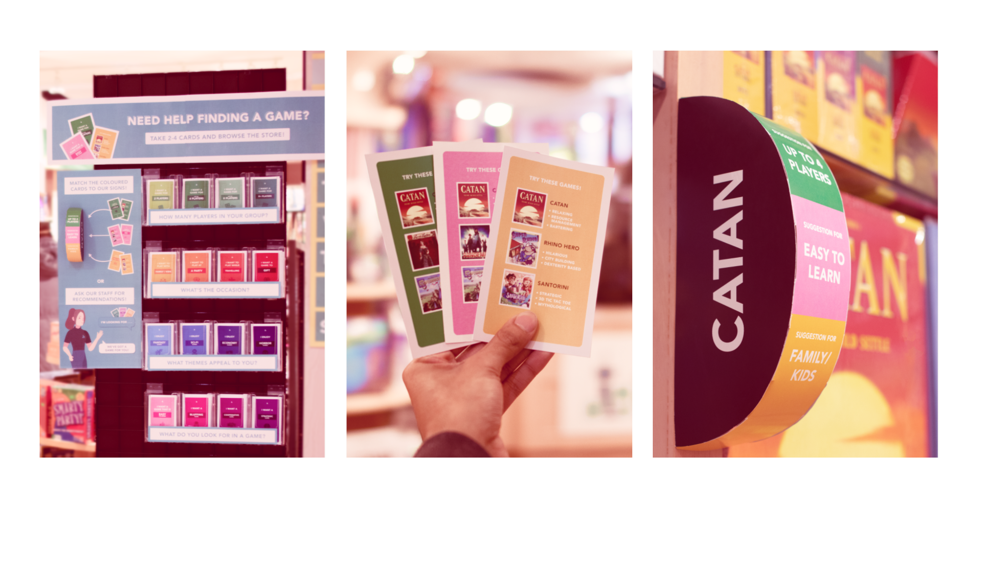

Rain City Games
Service Design | User Research and Prototyping
Roles
Design Research
User Interviews
User Testing
Prototyping
Team
Sahil Mann
Daniela Valdes
Ola Alsakour
Cameron Swanson
Tool
Figma
Adobe Illustrator
For a 13-week service design project, our team worked alongside Rain City Games, a specialty board game shop located in Vancouver
Choose your own Adventure cards aim to increase meaningful interaction between Rain City Games staff and the customers who are new to board games but are overwhelmed by the entry barrier.
My Role
User Research and Prototyping
I was responsible for developing product strategy, journey maps, conducting research interviews, creating prototypes of the product along with testing them on-site with customers to test its efficiency.

PROBLEM
Lack of Staff and Customer interaction
Each team member took turns visiting the shop and conduct customer interviews along with observing customer movement and behaviour patterns through which we made a couple observations
- There is a certain lack of interaction between customer and staff caused by customers hesitating to consult the staff and the staff not sure if the customer needs help.
- If and when the staff and customer interacted, the result was positive and the customer was satisfied with the recommendation provided by the staff.
Identifying our target audience
After further research we decided to focus on two key target audience in the store:

Since our main aim was to introduce new customers to the shop by providing them with a satisfactory first interaction with the staff, we decided to focus on the novice gamer as our main focus with the staff member being our secondary focus.
PRODUCT BREAKDOWN
Choose your Own Adventure
Our goal was to ensure that a novice board game enthusiast does not get overwhelmed by the amount and variety of board games that the store has to offer (over 1000 games). Our design is based around the expertise, knowledge and support that the staff at Rain city games is capable of providing to a novice customer who would appreciate their help. We hope that our product is capable of removing the uneasiness that comes with asking for suggestions or recommendations and make sure that they return to Rain city games for the staff's personal recommendations.
There are 3 parts to this Design Intervention
The Display
Contains the choose your own adventure cards along with concise instruction on how to use them. It’s placed upon entry to the shop to draw the attention of novice customers who are confused and not sure where to go. The instructions on the side establish a connection between the cards and the signage.

The Cards
A total of 16 cards describe certain genres created based on popularity and staff recommendation divided by color to differentiate them easier.
- The front of the cards consists of a concise prompt that clearly identifies the genre that relates to a customer’s needs and a call to flip the cards for suggestions.
- The back of the card consists of 3 suggestions with a large box art, name and 3 concise descriptions that summarize the game.
The Signage
The form of this signage is meant to catch the attention of customers browsing parallel to the shelves, where the white-text on black background sits on the flat side of the half-cylinder. Even the edge of the front rounded-side can be seen from different angles, so customers are able to find the colors they seek based on card categories. In case they are unsure of the color categories, they are also labelled appropriately: For example, "Suggestion for Up to 4 Players".

PROCESS
Ethnographies, Interviews, Prototype Testing and more
Since this was a 13 week project, we did a lot of converging and diverging along with a few design sprints(with and without the client), persona design, user journey and multiple concept creation. I would like to keep it as shot and sweet as possible, but I would be happy to talk more about this project in person as this one of my proudest projects :)
Understanding the Demographic
Based on those 80 interviews, we divided the RCG demographic in 3 personas.

From all of the research above, Veteran gamers seems to be capable of understanding their needs and requirements much more than the novice gamers who need support from the staff to dip their toes into the wast work of board games. Which is why we decided to focus down on the novice gamers and understand their behaviours and pain points
Frictions
"What type of games are these?"
"Would any of these games be intersting to give as a gift?"
"What does this sign with BGG:142 mean?"
"I don't understand these descriptions"
"I wonder what the reviews are....."
"I really don't want to ask the staff a silly question"
Insights
Novice Gamers do not fully understand current board game signage
The signage should be designed to have less jargon and better capable of directing customers to specific games
Board game descriptions are difficult for novice gamers to comprehend, as they are lengthy and tedious
Implementing easy to read descriptions and curated suggestions from the staff
Implementing a fluid way to increase conversations between the staff and the customer
Guiding Principles
After finding the right problem, we wanted to focus on finding the right solution. This was possible with a set of guiding principles.
This helped us understand what our intended user journey should be with out proposed solution, where we wanted the customer to be independent enough to search for their perfect game on their own as well as for the staff to be comfortable enough to approach a customer who is in need of help. Below illustrates how a novice customer would ideally interact with the RCG
REFLECTION
New Experiences and satisfied faces
Given the fact that we spent numerous hours conducting design sprint, interviewing customer, designing and redesigning the cards, display and signage as well as testing those on the customer, it is safe to say that we we are very satisfied with the final product we came up with. The project really gave me a new insight into interaction and service design. Understanding the customers and their need was initially challenging but the more interviews we did, the easier it got.
We believe that our project project is meaningful for our target audience, , the staff members feel less anxious approaching the customer, customer has the freedom to browse independently or use the cards to ask for the staff's recommendation and the store owner gets more staff and customer interaction and with the satisfaction of creating a returning customer that would increase revenue.
But that's not to day that this is the perfect solution, I am sure that there is a lot more user testing and prototyping to do. Ideally we would like to have our final product be a part of the store for a couple weeks and see how the product fares. I am sure that we will find new problems that would require creative solutions and I believe this is whats exciting about being a designer.